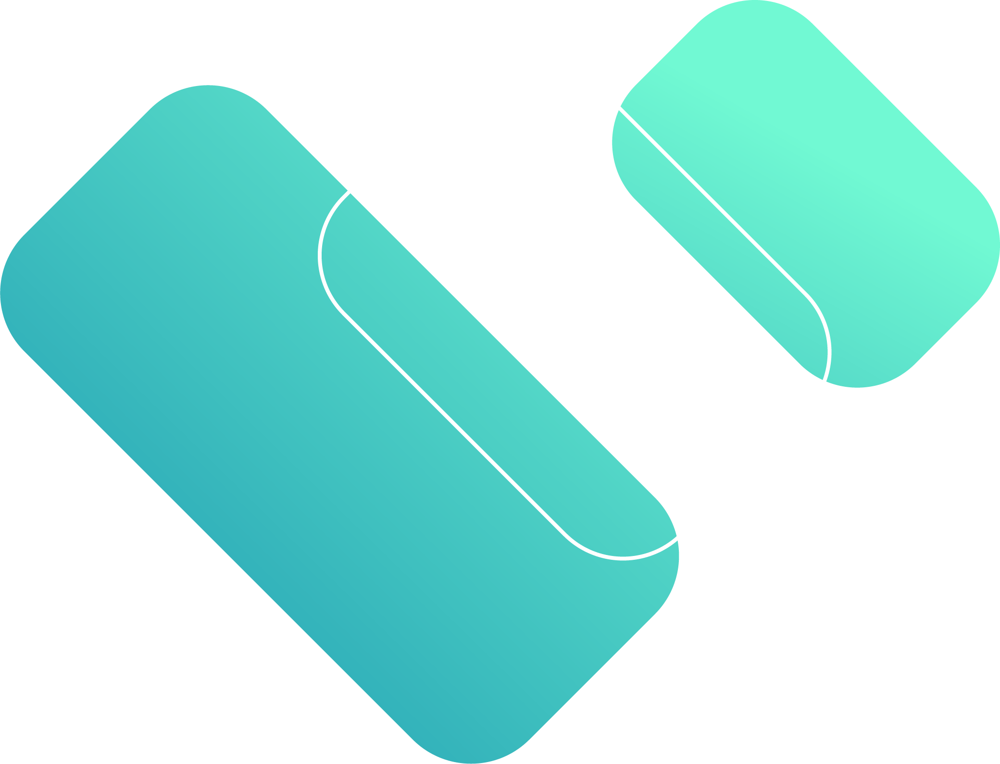

<!DOCTYPE html>
<html>
  <head>
    <title>Bink API v2</title>
    <!-- needed for adaptive design -->
    <meta charset="utf-8"/>
    <meta name="viewport" content="width=device-width, initial-scale=1">
    <link href="https://fonts.googleapis.com/css?family=Space Grotesk:300,400,700|Roboto:300,400,700" rel="stylesheet">
    <link rel="shortcut icon" type="image/png" href="https://bink.com/wp-content/uploads/2021/03/favicon2.svg"/>

    <!--header >
      <div style="display: flex; justify-content: space-between;">
        <a href="https://www.bink.com" style="float: left; text-decoration: none;">
          
          <text style="font-family: 'Space Grotesk'; text-align: center; color: white; font-size: 1.5ex; background: transparent"> Back to Homepage</text>
        </a>
        <h1>API Documentation</h1>
        
      </div>
    </header-->
    

    <!--
    Redoc doesn't change outer page styles
    -->
    <style>
      body {
        margin: 0;
        padding: 0;
      }
      header {
        background: linear-gradient(to left, #5BE0CA, #057EA8);
        color: white;
        padding: 10px 20px;
        text-align: center;
      }
      h1 {
        font-size: 2em;
        margin: 0;
        font-family: 'Space Grotesk';

      }
    </style>
  </head>
  <body>
    <redoc spec-url='wallet/2.0.yaml' required-props-first=true
       theme='{
         "sidebar": {
           "backgroundColor": "#EBFFFD"
         },
         "fab": {
           "backgroundColor": "#EBFFFD"
         },         
         "rightPanel": {
            "backgroundColor": "#141E33",
            "textColor": "#EBFFFD"
         },
         "typography": {
          "fontFamily": "Plus Jakarta Sans",
					"color": "#057EA8",
          "code": {
            "backgroundColor": "#71F9D3",
            "color": "CMYK (55, 24, 0, 67)",
            "fontFamily": "Space Grotesk"
          },          
          "headings": {
            "fontFamily": "Space Grotesk",
            "fontWeight": "800",
						"lineHeight": "0.6em",
						"color": "#141E33"
          }
				 }
       }'></redoc>
    <script src="https://cdn.redoc.ly/redoc/latest/bundles/redoc.standalone.js"> </script>
  </body>
</html>